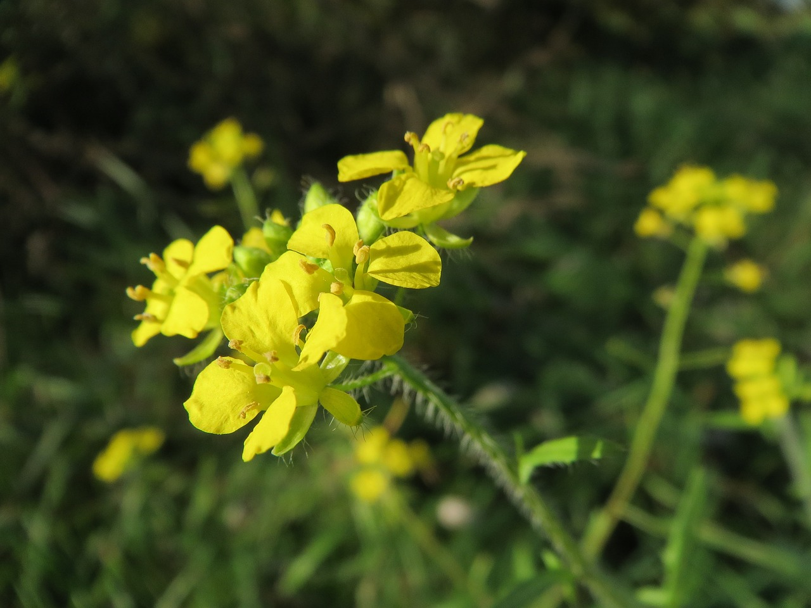

Ayuntamiento de Senés
JARDIN BOTANICO DE ESPECIES AUTOCTONAS DE SENES

Diplotaxis erucoides

El jaramago (Diplotaxis erucoides) es una planta herbácea anual muy común en el ecosistema mediterráneo, especialmente en terrenos removidos, cultivos y bordes de caminos. Se caracteriza por su rápido crecimiento y su abundante floración.
Presenta tallos erectos y ramificados, con hojas profundamente divididas y de aspecto irregular. Sus flores son pequeñas, de color blanco o amarillento con nervaduras visibles, y aparecen en gran número formando manchas muy llamativas en el paisaje.
El jaramago se distribuye ampliamente por la región mediterránea, creciendo de forma espontánea en campos de cultivo, cunetas y terrenos alterados. Prefiere suelos ricos en nutrientes y bien drenados.
En el entorno de Senés, es muy frecuente en campos y caminos, formando parte del paisaje agrícola tradicional.
El jaramago tiene usos limitados en medicina tradicional, aunque algunas especies del género se han utilizado por sus propiedades digestivas y estimulantes.
También ha sido considerado una planta comestible en estados jóvenes, aunque su uso es poco frecuente.
El jaramago simboliza la renovación y la abundancia, debido a su rápida colonización de terrenos alterados y su floración masiva.
Representa la capacidad de la naturaleza para regenerarse en espacios modificados por el ser humano.
En Senés, el jaramago se utilizaba como planta comestible para ensaladas cuando las hojas estaban tiernas, y cuando las hojas se endurecían para comida de conejos.
Respecto a la salud tiene propiedades antiescorbúticas por su riqueza en vitamina C.
El jaramago florece principalmente entre invierno y primavera, cubriendo los campos con pequeñas flores que aportan color al paisaje.
Es una de las primeras plantas en florecer tras las lluvias, lo que la convierte en un indicador de la llegada de la primavera.
Su abundancia en campos cultivados la ha convertido en una especie muy representativa del entorno agrícola mediterráneo.